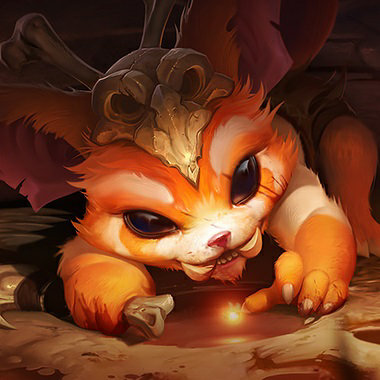

 GNAR
A continuación presento algunos tips, en que orden subir las habilidades del campeon, items para comprar y las citas de videos en los que me basé
A continuación presento algunos tips, en que orden subir las habilidades del campeon, items para comprar y las citas de videos en los que me basé